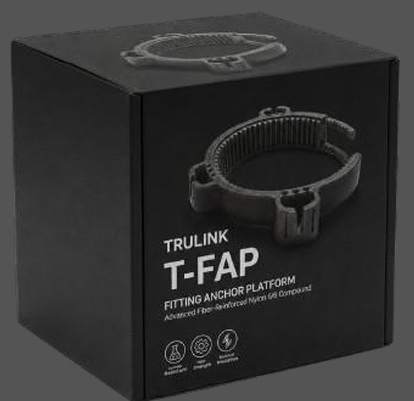

TRULINK FIBER LLC
5203 Juan Tabo Blvd Ne, Albuquerque, NM, 87111-2691, US
5203 Juan Tabo Blvd Ne, Albuquerque, NM, 87111-2691, US

TRULINK FIBER LLC es una empresa de ingeniería y manufactura especializada en soluciones de fibra óptica y componentes de infraestructura digital para telecomunicaciones, redes corporativas y proyectos de expansión regional.
Con sede en Estados Unidos y operaciones logísticas en Panamá, Centroamérica, el Caribe y Colombia, TRULINK se posiciona como el único fabricante que ofrece fibra óptica para interiores en cajas de 305 metros, un formato diseñado para optimizar instalación, transporte y control de inventario en proyectos de mediana escala.
Producción directa en Shenzhen, China, bajo estándares ISO, con distribución hacia toda la región latinoamericana.

El T‑FAP™ es la innovación en desarrollo de TRULINK FIBER LLC para transformar la infraestructura de telecomunicaciones en Latinoamérica.
👉 Aunque aún está en desarrollo, el T‑FAP™ refleja nuestra visión de infraestructura eterna, sostenible y adaptada al futuro digital de la región.


En TRULINK FIBER LLC hemos desarrollado un formato exclusivo que responde a las necesidades reales de instaladores y operadores: cajas de fibra óptica para interiores de 305 metros.
👉 Este formato exclusivo refuerza nuestra visión de conectividad inteligente y logística disruptiva.
TRULINK FIBER LLC cuenta con un robusto hub logístico y operativo para toda la región.
Hub Logístico Central
Cobertura Total
Suministro Ágil
Presencia Estratégica


Si desea contactarnos para solicitar información comercial o explorar oportunidades de inversión, por favor complete el siguiente formulario. Nuestro equipo se pondrá en contacto con usted a la brevedad.